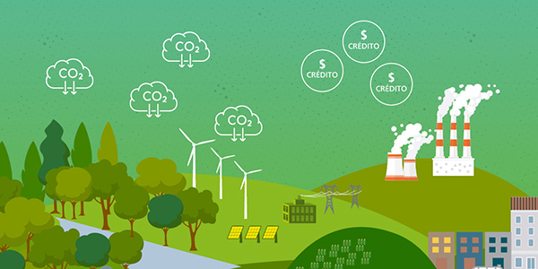

Calculadora de carbono
Este trabalho explora a Calculadora de Carbono como uma ferramenta que ajuda indivíduos e organizações a quantificarem sua contribuição para as mudanças climáticas e tomarem decisões mais sustentáveis. A crescente emissão de gases de efeito estufa (GEE) causa sérias consequências ambientais, como eventos climáticos extremos e perda de biodiversidade. Problemas geopolíticos, como conflitos no Oriente Médio e Ucrânia, agravam essa situação ao elevar a demanda por recursos energéticos e aumentar as emissões.

O estudo também aborda os créditos de carbono, um mecanismo criado pelo Protocolo de Kyoto que permite a compra e venda de créditos representando a redução de emissões de GEE. Esse sistema incentiva práticas sustentáveis e permite que empresas compensem emissões, mas é alvo de críticas por potencialmente permitir que poluidores continuem suas atividades sem mudanças estruturais. O mercado de créditos de carbono se divide entre o regulado (para empresas obrigadas a reduzir emissões) e o voluntário (para organizações e indivíduos interessados em reduzir suas pegadas de carbono).
Vamos calcular sua emissão?